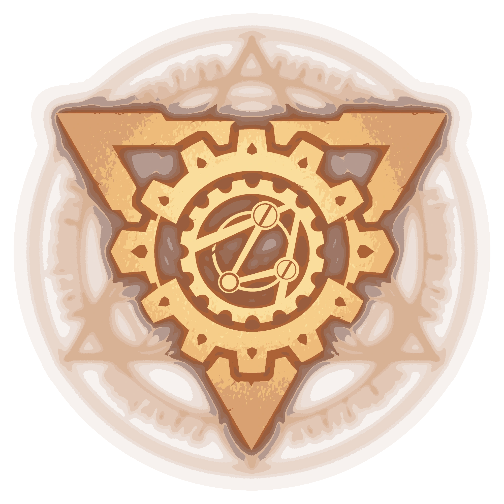

Roselle Gustav, born Huang Tao, is a modern-era transmigrator who arrived in the Lord of the Mysteries world in 1143. A statesman, explorer, inventor, and author of the famous Roselle’s Diary, he reshaped the Fifth Epoch before becoming the Black Emperor. His notes later helped Klein Moretti choose the Seer Pathway.3
Major spoilers for Lord of Mysteries and Circle of Inevitability.“I was an emperor for many years, stood at the pinnacle of human power. I faced True Gods, fought Angels, had followers willing to die for me. I brought the light of civilization to that era. […] What regrets could I possibly have in this life?”
Appearance
Roselle has long chestnut hair, blue eyes, a high nose bridge, thin lips, and two neat little mustaches. The source profile describes him as quite good-looking.
Personality
He is bold and uninhibited, open-minded in his relationships, fiercely individualistic, and politically astute. In his youth, he was dramatic and ambitious, viewing himself as the protagonist of his era. His adventurous streak led him into dangerous places, including Primitive Island in the Fog Sea and the Abyss.
In later years, corruption took hold and his personality and behavior grew increasingly extreme. His diary also reveals his regret at not choosing the Apprentice, Seer, or Marauder Pathway; those reflections influenced Klein’s choice of the Seer Pathway instead of Old Neil’s Mystery Pryer Pathway.3
Legacy and roles
Roselle introduced proverbs, literature, and technological advances to his era. As consul and later emperor of Intis, he helped overturn the old kingdom and established the Intis Empire. His safer sea route to the Southern Continent accelerated colonization there, a process also described as an invasion by the Northern Continent.
In Circle of Inevitability, a Mirror Roselle is revealed in the Mirror World as the leader of the Mirror People.4
Titles and aliases
The Four Horsemen of the Apocalypse
Roselle’s four personal subordinates were Grimm, William, Poli, and Edwards. He called them the Four Horsemen of the Apocalypse, or the Knights of the Apocalypse.67
Trivia
- Nast believed that “no one is more suitable than ‘Him’ to be the Black Emperor.”5
- Before transmigrating, Huang Tao’s profession was oriented toward marketing.8
- Klein once complained that Roselle’s handwriting was even uglier than his own.9
- In the side story In Modern Day, Roselle is the CEO of the Intis Group and the superior of Huang Tao and Zhou Mingrui. He became a father at 18 and is intensely protective of his daughter, resenting other men who get close to her. He is also described as treating pretty girls kindly.10
- In that side story, Roselle writes his diary in cursive script.11
Names and translations
| Language | Names |
|---|---|
| English | Roselle Gustav; Huang Tao |
| Chinese | 罗塞尔·古斯塔夫; 黄涛 |
| Thai | โรเซลล์ กุสตาฟ; หวงเทา |
See also
Sources and references
- Roselle Gustav, citing Circle of Inevitability, Chapter 884.
- Roselle Gustav, citing Lord of Mysteries, Chapter 714.
- Roselle Gustav, citing Lord of Mysteries, Chapter 21.
- Roselle Gustav, citing Circle of Inevitability, Chapter 729.
- Roselle Gustav, citing Lord of Mysteries, Chapter 972.
- Roselle Gustav, citing Lord of Mysteries, Chapter 59.
- Roselle Gustav, citing Lord of Mysteries, Chapter 615.
- Roselle Gustav, citing the author’s Discord International AMA.
- Roselle Gustav, citing Lord of Mysteries, Chapter 317.
- Roselle Gustav, citing In Modern Day, Chapter 3.
- Roselle Gustav, citing In Modern Day, Chapter 13.
- Roselle’s Sayings; individual quote locations are shown with each entry.
- Roselle’s Diary in a Chronological Order.
- Roselle Gustav/History.
- Intis Republic.
- Roselle’s Diary, including cited novel chapters.
- Paragon Pathway.
- Paragon Pathway/Abilities.
- Hermit Pathway/Abilities.
- Black Emperor Pathway/Abilities.
This article adapts and reorganizes material from the Lord of the Mysteries Wiki’s Roselle Gustav article, which is available under CC BY-SA. The portrait is sourced from the same Fandom character page; see its caption for credit.
History and major events
This expanded chronology combines Roselle’s character history, Intis’s political record, and the diary chronology. Where the sources do not give a precise year, the event is marked undated.141513
· Birth
Roselle Gustav is born in Trier, in the Intis Kingdom. Before transmigration, he was Huang Tao, a modern-era man from China.
· Transmigration and first pathway
Huang Tao arrives in this world as Roselle Gustav. The Church of Craftsmanship gives him two pathway options, and he chooses Savant, the Paragon route. He learns the Acting Method from Zaratul and begins applying modern scientific knowledge to a world entering an industrial age.14
Early Fifth Epoch · Inventor and industrial catalyst
Roselle “invents” the steam engine, improves sailboats, and introduces other technologies remembered from his previous life. His inventions help start Intis’s Industrial Revolution and win him recognition from the Church of Craftsmanship. In response to his influence, the Church receives a sacred commandment to rename its deity the God of Steam and Machinery—the first public message from a deity in the Fifth Epoch.1417
Undated · Marriage and exploration
Roselle marries Matilda. He later finds the ship Black King and explores the Fog Sea with close companions. Their expedition reaches a primitive island tied to the Primordial Moon, where the group is unknowingly exposed to corruption that will shape Roselle’s fate.14
· Bernadette’s birth
His daughter Bernadette is born.
· Revolution and consulship
With Zaratul’s help, Roselle leads a revolution against the Intis Kingdom, overthrows the Sauron monarchy, and establishes the Intis Republic. He becomes its governor—also rendered as consul—and joins the Twilight Hermit Order at an unspecified date, where he sees the Blasphemy Slate.1415
1173–1192 · Caesar of the Republic
As Intis’s consul, Roselle reforms the penal code, encourages invention, and protects industrial expansion. He leads the Republic to victories against neighboring states and turns Lenburg, Masin, Segar, and other countries into protectorates. This combination of legal change, mechanized growth, and military reach makes Intis a major power—but his later advancement strains his relationship with the Church of Steam and Machinery. Roselle suspects the deity is trying to control him by making his son Bornova a devoted believer.14
· Mr. Door and the moon
Roselle meets Mr. Door, who shares secrets and suggests a lunar journey. After reaching Sequence 1, Roselle goes to the moon; the trip deepens his corruption and reveals that his new world is Earth, while the approaching Apocalypse is tied to the Outer Deities.14
· Emperor Caesar
Roselle converts the Republic into the Intis Empire and declares himself Emperor Caesar, or Caesar the Great. The source identifies this as likely part of the Black Emperor Sequence 0 ritual. His imperial title crowns his rise, but also makes the emperor’s apotheosis and the political order around it targets of competing church and aristocratic interests.1415
· Southern Continent route
Roselle discovers a safer sea route to the Southern Continent. The route accelerates colonization by Northern Continent powers and is also described as an invasion; Intis and Loen compete for territory there.15
· Last diary entry
Roselle records that his mausoleums are complete and warns a future transmigrator to choose a pathway carefully. He is preparing to advance to Sequence 0: Black Emperor.13
· Assassination and the end of his reign
After reaching Sequence 0, Roselle arranges an assassination involving the Churches of the Eternal Blazing Sun and Steam and Machinery, along with former Intis royal and noble interests. The plan is meant to remove the characteristics of his former Paragon and Hermit pathways so he can resurrect with only the Black Emperor characteristics. The character article also names the Sauron family among the forces involved. Roselle then realizes that resurrection could give an Outer Deity a route through the Astral Barrier, halts his return, and seals himself on the primitive island. His daughter Bernadette eventually finds him, but he sends her away to protect her from corruption. The emperor’s death ends the regime; Intis later returns to a republican system.14152
· Incomplete return
Roselle returns as Sequence 0: Black Emperor, but in an incomplete state.2
· Project Vortex
The Mother Goddess of Depravity reclaims her corruption from Roselle, but he is then corrupted by the Uncertain Mist. He helps Adam attack the Uncertain Mist and perishes. The source says he may resurrect after a hundred years: corruption from the Uncertain Mist, the Nation of Disorder, and the Chaos Sea could reach a basic balance that allows him to retain humanity and clarity.2
Historical details are paraphrased from the Roselle Gustav/History, Intis Republic, and diary chronology pages.
Pathway and Sequence progression
Roselle’s documented route crosses three pathways. The source profile gives his Paragon range and named high-sequence forms, but not an exhaustive list of every potion or advancement date, so the sequence below stays at the level supported by that account.

Paragon Pathway
Roselle begins as a Beyonder on the Savant/Paragon route and advances through Sequences 9 to 2.13
Hermit Pathway
He switches to the neighboring pathway and reaches Sequence 1: Knowledge Emperor.2
Black Emperor Pathway
He changes to the non-neighboring Black Emperor Pathway, reaches Sequence 0, and sheds the Beyonder characteristics from his former pathways.2
Condition after the progression
He attempts the Black Emperor advancement, then is assassinated.
He returns as an incomplete Black Emperor.
After perishing in the conflict with the Uncertain Mist, the source describes a possible return once several corruptions reach a basic balance.
Former pathways: Paragon, Sequences 9–2; Hermit, Sequence 1. See the Pathway Directory for related sequence ladders.
Powers and Abilities
Roselle’s documented route was Paragon Sequence 9–2, Hermit Sequence 1, then Black Emperor Sequence 0. The Paragon and Black Emperor entries below summarize powers associated with those pathway Sequences; they describe the pathway’s abilities, not a claim that every listed power is separately shown in Roselle’s own scenes.21820
Paragon Pathway · Sequences 9–2
Savant
Gains broad scientific, mechanical, and mystical knowledge, with exceptional recall, learning, and comprehension.
Archaeologist
Builds physical resilience, practical survival and historical expertise, and a limited grasp of ritual magic and the taboos of ruins.
Appraiser
Quickly identifies the powers and dangers of most Beyonder items, helping him use them with fewer risks.
Artisan
Manufactures Beyonder items and mechanical artifacts, reshaping characteristics through crafting and assembly.
Astronomer
Draws power from astronomical phenomena and constellations, including starlight curses and gravity-altering effects.
Alchemist
Creates temporary dolls and objects infused with souls; enhanced manufacturing supports complex devices and mechanical bodies.
Arcane Scholar
Extracts information from surroundings, manipulates the environment, and can disintegrate structures or transform into knowledge.
Knowledge Magister
Analyzes essences, learns with extraordinary speed, creates imagined wonders, and alters physical principles through knowledge.
Sequence titles and ability summaries follow the Paragon Pathway and Paragon abilities articles.
Hermit Pathway · Sequence 1
As a Knowledge Emperor, Roselle could use information gathered in the Spirit World to influence the Seven Lights. The pathway’s defining authority lets knowledge take on tangible power. He demonstrates this by turning the potion formulas of the 22 pathways into the Cards of Blasphemy: their effects can evoke a High Sequence aura, cause pathway Beyonders to converge, and resist divination and prophecy. The source notes that Mother Goddess of Depravity corruption contributes to the cards’ unusual anti-divination strength.19
Black Emperor Pathway · Sequence 0
At Sequence 0, Roselle’s route centers on the authority of Autocrat: exploiting loopholes in Order or distorting its intent so that rules serve him. The pathway’s core abilities include Bribery, Disorder, Distortion, Bestowment, Magnify, Exploit, Majesty, and Resurrection. A Black Emperor can return from death while his mausoleum and order remain intact; Roselle’s own attempted resurrection was halted when he recognized the danger his corruption posed to the world.2014
Final known advancement
Sequence 0: Black Emperor · returned incomplete, missing characteristics and Uniqueness
Selected quotes 8 excerpts
Many sayings attributed to Roselle echo ideas from the modern world; the source wiki cautions that their authenticity is not guaranteed.12
“I was an emperor for many years, stood at the pinnacle of human power. I faced True Gods, fought Angels, had followers willing to die for me. I brought the light of civilization to that era. […] What regrets could I possibly have in this life?”
— Roselle Gustav, Circle of Inevitability, Chapter 884.1
“The only lesson that humans can learn from history is that humans do not gain any lessons from history.”
— Attributed to Emperor Roselle, Lord of Mysteries, Chapter 15.12
“One is never too old to learn.”
— Attributed to Emperor Roselle, Lord of Mysteries, Chapter 106.12
“I want it all!”
— Emperor Roselle’s famous saying, recalled by Audrey, Lord of Mysteries, Chapter 131.12
“Take things one step at a time...”
— Attributed to Emperor Roselle, Lord of Mysteries, Chapter 375.12
From Roselle’s diary
“Huang Tao!”
— Diary entry, 23 February 1143, Lord of Mysteries, Chapters 359–360.16
“The taste of a Demoness ain’t bad.”
— Diary entry, Lord of Mysteries, Chapter 317.16
“I have to work hard to save myself.”
— Diary entry, Lord of Mysteries, Chapters 714–715.16
Short diary excerpts are attributed to Roselle’s published diary entries; read their surrounding context on Roselle’s Diary. More sayings and their chapter context appear on Roselle’s Sayings.